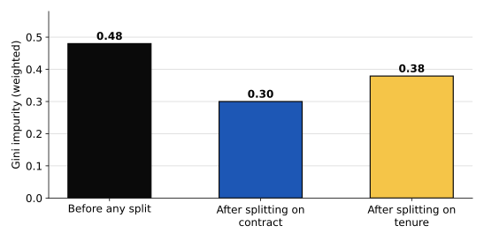
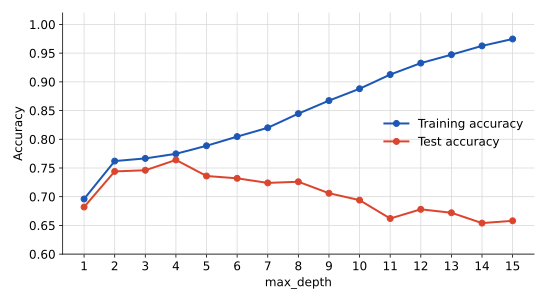

Classification
Decision Trees: Splitting Data into Clear Decisions
A telecom company wants to know which customers are about to cancel their subscription. Instead of a complicated formula, a decision tree answers this with a few simple questions: Is the customer on a monthly contract? Have they been with the company for less than a year? Did they call support more than twice last month? Follow the answers from top to bottom, and you reach a prediction: churn or stay.
This is what makes decision trees so popular. The model is a set of if/else rules that anyone can read, check and explain to a colleague. It can also handle numbers and categories together, without much preparation.
In this post, you will learn how a tree makes a prediction, how it chooses where to split, how to build one in Python, and how to keep it from memorizing the training data. Decision trees solve the same kind of problem as Logistic Regression, predicting a yes/no outcome, but they find the answer through rules instead of coefficients.
In this article
How a Decision Tree Makes a Prediction
Let’s follow one customer through a small churn tree. Maria has been a customer for 8 months, pays month to month, and called support three times last month.
The tree starts at the top with its first question: Is the contract month-to-month? Maria’s answer is yes, so we move down the “yes” branch. The next question is Has the customer been with us for less than 12 months? Again, yes. The last question is Did the customer call support more than twice last month? Yes. We arrive at a box with no further questions, and it says: churn.
Every part of the tree has a name:
- Root node. The first question, at the top. It splits all customers.
- Branch. One possible answer to a question (yes or no).
- Internal node. A question further down the tree.
- Leaf. A final box that gives the prediction. A leaf does not only say “churn” or “stay”. It also holds the share of training customers who ended up there, for example 78% churned, and that share is the tree’s confidence.
To predict for a new customer, you only follow the answers from the root down to a leaf. No calculation is needed, so a tree is easy to check by hand and to explain to a colleague.
How a Decision Tree Chooses Its Splits
In Chart 1 the tree asked about the contract first. Why not tenure or support calls? The tree does not guess. At every step it tries many possible questions and keeps the one that separates churners from stayers best. To compare questions, it needs a score for how mixed a group of customers is.
Gini Impurity: How Mixed Is a Group?
Gini impurity is that score. It is the probability that two customers drawn at random from a group have different outcomes. A group of only churners, or only stayers, has a Gini impurity of 0 (the group is pure). A 50/50 group has the highest value for two classes: 0.5.
Gini = 1 − (pchurn2 + pstay2)p = share of customers in the group with that outcome.
Take 20 customers: 8 churned and 12 stayed. The shares are 0.40 and 0.60.
Gini = 1 − (0.402 + 0.602) = 1 − (0.16 + 0.36) = 0.48
0.48 is close to the maximum of 0.5, so this group is very mixed. A tree that predicted “stay” for all 20 customers would be wrong for 40% of them. The tree’s job is to ask questions that push this number down.
Comparing Two Possible Splits
Split A asks “Is the contract month-to-month?” and splits the 20 customers into two groups of 10:
| Group | Churned / stayed | Gini |
|---|---|---|
| All 20 customers | 8 / 12 | 0.48 |
| Month-to-month (10) | 7 / 3 | 0.42 |
| Other contracts (10) | 1 / 9 | 0.18 |
A split creates two groups, so we take the weighted average of their impurities. Each group is weighted by its share of the customers:
Weighted Gini = 1020 × 0.42 + 1020 × 0.18 = 0.30
The impurity fell from 0.48 to 0.30, a drop of 0.18. This drop is what the tree uses to compare questions: the larger it is, the cleaner the two groups became.
Split B asks “Is the tenure under 12 months?”. It creates a group of 12 customers (7 churned, 5 stayed, Gini 0.49) and a group of 8 customers (1 churned, 7 stayed, Gini 0.22). The weighted Gini is 0.38, a drop of only 0.10. The contract question separates the customers better, so it becomes the root.

A real tree does not compare only two questions. For every feature it tries every possible cut-off (tenure ≤ 5 months, ≤ 6 months, and so on) and keeps the split with the largest drop.
Growing the Tree: Repeat on Every Branch
After the first split, the tree repeats the same step inside each branch: among month-to-month customers, which question lowers the impurity most? That is why the two branches of a tree ask different questions. The process continues until a stopping rule applies: the group is pure, too few customers are left, or the tree has reached its maximum depth. The final groups are the leaves.
Without a stopping rule, the tree keeps splitting until almost every leaf is pure. That sounds perfect, but it leads to overfitting, as we will see in Overfitting and Pruning.
Entropy
Entropy is the other common way to measure how mixed a group is. For the same 20 customers it is −(0.40 × log2 0.40 + 0.60 × log2 0.60) ≈ 0.97, where 1 is the maximum for two classes. Gini and entropy usually choose the same or very similar splits. Gini is the default in scikit-learn; use criterion="entropy" to switch.
Building a Decision Tree in Python
Training a tree takes only a few lines in scikit-learn. We use a churn table with one row per customer: contract, tenure_months, monthly_charges, support_calls and the target churned. The results shown in this post come from a simulated table of 2,000 customers, of whom 36% churned.
Train the Tree
import pandas as pd
from sklearn.model_selection import train_test_split
from sklearn.tree import DecisionTreeClassifier, export_text
# df: one row per customer, target column "churned" (1 = cancelled)
X = pd.get_dummies(df.drop(columns="churned"), columns=["contract"])
y = df["churned"]
X_train, X_test, y_train, y_test = train_test_split(
X, y, test_size=0.25, stratify=y, random_state=42
)
tree = DecisionTreeClassifier(criterion="gini", max_depth=3, random_state=42)
tree.fit(X_train, y_train)
print(export_text(tree, feature_names=list(X.columns)))
print(f"Train accuracy: {tree.score(X_train, y_train):.3f}")
print(f"Test accuracy: {tree.score(X_test, y_test):.3f}")Three steps matter here. A tree cannot read text such as “Month-to-month”, so get_dummies turns the contract column into 0/1 columns (see One-Hot Encoding); numeric features need no scaling. train_test_split keeps 25% of the customers as a test set that the tree never sees while learning, and stratify=y keeps the churn share the same in both parts. DecisionTreeClassifier then learns the splits from the training data; max_depth=3 limits the tree to three questions in a row.
|--- contract_Month-to-month <= 0.50
| |--- support_calls <= 3.50
| | |--- tenure_months <= 11.50
| | | |--- class: 0
| | |--- tenure_months > 11.50
| | | |--- class: 0
| |--- support_calls > 3.50
| | |--- tenure_months <= 4.50
| | | |--- class: 1
| | |--- tenure_months > 4.50
| | | |--- class: 0
|--- contract_Month-to-month > 0.50
| |--- tenure_months <= 25.50
| | |--- support_calls <= 1.50
| | | |--- class: 1
| | |--- support_calls > 1.50
| | | |--- class: 1
| |--- tenure_months > 25.50
| | |--- support_calls <= 1.50
| | | |--- class: 0
| | |--- support_calls > 1.50
| | | |--- class: 0
Train accuracy: 0.767
Test accuracy: 0.746Read the Rules and Predict
Each line of the output is a question. The first line, contract_Month-to-month <= 0.50, means “not a month-to-month customer”, because the column is 0 or 1. The lines indented below it are the next questions, and class: 1 is a leaf that predicts churn. Training and test accuracy are close (0.767 and 0.746), so a tree with depth 3 does not memorize the training data.
To predict for Maria from the start of the post (8 months of tenure, 3 support calls, month-to-month contract), follow the rules: month-to-month, tenure up to 25 months, more than one support call. She lands in a churn leaf where 76% of 245 similar training customers churned. This share is the tree’s confidence, and tree.predict_proba returns it for new customers.

Overfitting and Pruning
A depth-3 tree has only 8 leaves. What happens if we remove all limits and let the tree grow until it can?
Without limits, the tree grows to a depth of 23 with 412 leaves. It classifies every training customer correctly (100% accuracy), but on new customers it reaches 64.4%, barely better than predicting “stay” for everyone (64%). With 412 leaves, many of them hold only a handful of customers, so the tree has memorized noise instead of learning a pattern. This is overfitting; the Overfitting and Underfitting post explains the bias-variance trade-off behind it.

Pruning: Keeping the Tree Small
Pruning limits the size of a tree so that it only keeps splits that generalize. There are two ways:
- Pre-pruning. Stop the tree early with limits such as
max_depth(the number of questions in a row) ormin_samples_leaf(every leaf must hold at least this many customers). - Post-pruning. Grow a large tree first, then cut away branches that add little. In scikit-learn this is controlled by
ccp_alpha.
Chart 4 uses the test set only to show the idea. To choose the limits, we should not look at the test set, because then it is no longer a fair test. Instead, we use 5-fold cross-validation on the training data: the training set is split into five parts, and each part takes a turn as validation data.
Scikit-learn’s GridSearchCV tries every combination of the limits and returns the best one. Here it picks DecisionTreeClassifier(max_depth=4, min_samples_leaf=50): at most 4 questions in a row and at least 50 customers in every leaf, with a cross-validated accuracy of 0.762. It has 16 leaves instead of 412. Its test accuracy (0.756) is far higher than that of the unlimited tree (0.644), and close to its training accuracy (0.773), a sign that it generalizes.
Evaluating a Decision Tree
Accuracy alone says little. In our test set 64% of customers stay, so a model that always predicts “stay” is right 64% of the time. The pruned tree reaches 75.6%, which is a real improvement, but we need to see which mistakes it makes. Scikit-learn’s confusion_matrix, classification_report and roc_auc_score (all in sklearn.metrics) give the numbers below for the test set.
| Predicted stay | Predicted churn | |
|---|---|---|
| Actually stayed | 254 | 66 |
| Actually churned | 56 | 124 |
- Precision (churn) = 0.65. Of the 190 customers the tree flags as churners (124 + 66), 124 really churn. This tells the retention team how many of their calls reach someone who was about to leave.
- Recall (churn) = 0.69. Of the 180 customers who really churned, the tree finds 124. The other 56 leave without a warning.
- AUC = 0.81. If we pick one churner and one stayer at random, the tree gives the churner the higher churn score in 81% of the cases.
These metrics are explained step by step in Common Logistic Regression Metrics, and they work for a decision tree in the same way. One thing is specific to trees: every customer in a leaf receives the same probability, so our tree with 16 leaves produces only 16 different scores. Its ROC curve is therefore a coarse line with 16 points, and it cannot rank customers inside a leaf, unlike Logistic Regression, which gives every customer an individual score.
Reading a Tree and Feature Importance
A tree can be read as a list of rules. Every path from the root to a leaf is one rule. In the pruned tree, for example, one rule says: month-to-month contract, tenure up to 25 months and more than one support call → churn. To see which features matter most overall, scikit-learn adds up how much each feature reduced the impurity across all splits (feature_importances_):

Be careful with this chart. Importance shows how much a feature is used, not in which direction it acts: to see that short tenure raises churn, look at the rules. Also, one-hot encoding splits the contract into several columns, so its total importance is spread across them (0.58 + 0.02 + 0.00).
How to explain it to stakeholders
“We built a simple set of rules that predicts which customers are likely to cancel. The biggest signal is the contract: 55% of our month-to-month customers churned, compared with 13% of everyone else. Among month-to-month customers in their first 25 months, those who called support more than once churned in 76% of the cases (245 customers in our data).
On customers the model had never seen, it was right about 3 times out of 4. It finds about 7 in 10 of the customers who really leave, and about 2 in 3 of the customers it flags do leave. So the retention team can start with the flagged customers on month-to-month contracts and decide whether a discount or a call is worth the cost. The question for us is which offer keeps these customers at a price we can afford.”
Key takeaway
A decision tree predicts with a chain of yes/no questions and picks each question by how much it lowers the impurity of the resulting groups. Left unlimited, it memorizes the training data, so limit its depth and leaf size with cross-validation and judge it on a test set. The result is a model you can read as rules and explain in a meeting.
Related posts
- Logistic Regression Another way to predict churn, with coefficients instead of rules.
- Common Logistic Regression Metrics Confusion matrix, precision, recall and ROC in detail.
- Overfitting and Underfitting The bias-variance trade-off behind pruning.
- One-Hot Encoding How to turn the contract type into numeric columns.
References
- scikit-learn: Decision Trees (Gini, entropy and pruning)
- scikit-learn: DecisionTreeClassifier